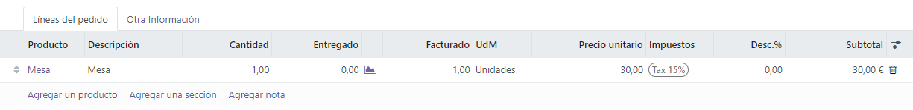
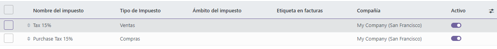
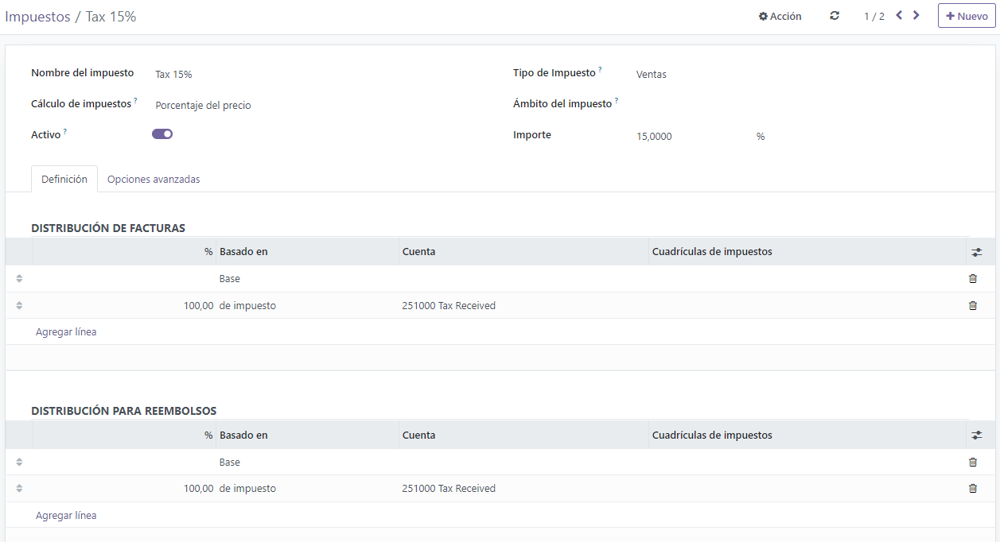
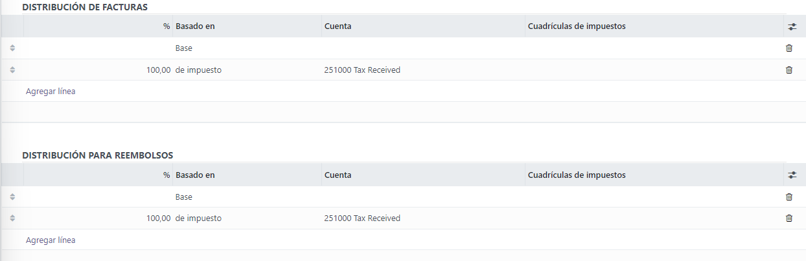
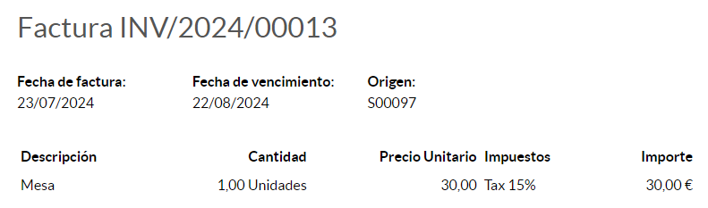
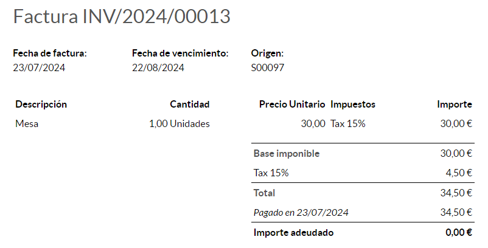
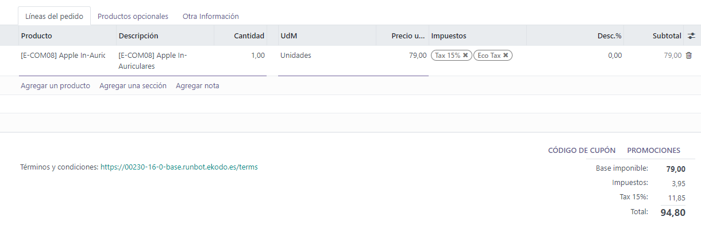
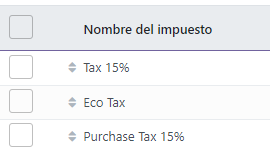

Taxes¶
There are numerous types of taxes, and their application varies greatly, depending mostly on your company’s localization. To make sure they are recorded with accuracy, Odoo’s tax engine supports all kinds of uses and computations.
Default taxes¶
Default Taxes define which taxes are automatically selected when there is no other indication about which tax to use. For example, Odoo prefills the Taxes field with the Default Taxes when you create a new product or add a new line on an invoice.
To change your Default Taxes, go to , select the appropriate taxes for your default Sales Tax and Purchase Tax, and click on Save.

Note
Default Taxes are automatically set up according to the country selected at the creation of your database, or when you set up a fiscal localization package for your company.
Activate Sales Taxes from the List view¶
As part of your fiscal localization package, most of your country’s sales taxes are already preconfigured on your database. However, only a few of them are activated by default, so that you can activate only the ones relevant for your business.
To activate Sale Taxes, go to and use the Activate toggle button to activate or deactivate a tax.
Configuration¶
To edit or create a Tax, go to and open a tax or click on Create.
Important
Taxes have three different labels, each one having a specific use. Refer to the following table to see where they are displayed.
Back end |
Taxes column on exported invoices |
Above the Total line on exported invoices |
Basic Options¶
Tax Name¶
The Tax Name as you want to display it for backend users. This is the label you see while editing Sales Orders, Invoices, Products, etc.
Tax Computation¶
Group of Taxes
The tax is a combination of multiple sub-taxes. You can add as many taxes you want, in the order you want them to be applied.
Important
Make sure that the tax sequence is correct, as the order in which they are may impact the taxes’ amounts computation, especially if one of the taxes affects the base of the subsequent ones.
Fixed
The tax has a fixed amount in the default currency. The amount remains the same, regardless of the Sales Price.
For example, a product has a Sales Price of $1000, and we apply a $10 fixed tax. We then have:
Product’s Sales Price
Price without tax
Tax
Total
1,000
1,000
10
1,010.00
Percentage of Price
The Sales Price is the taxable basis: the tax’s amount is computed by multiplying the Sales Price by the tax’s percentage.
For example, a product has a Sales Price of $1000, and we apply a 10% of Price tax. We then have:
Product’s Sales Price
Price without tax
Tax
Total
1,000
1,000
100
1,100.00
Percentage of Price Tax Included
The Total is the taxable basis: the tax’s amount is a percentage of the Total.
For example, a product has a Sales Price of $1000, and we apply a 10% of Price Tax Included tax. We then have:
Product’s Sales Price
Price without tax
Tax
Total
1,000
1,000
111.11
1,111.11
Active¶
Only Active taxes can be added to new documents.
Important
It is not possible to delete taxes that have already been used. Instead, you can deactivate them to prevent future use.
Note
This field can be modified from the List View. See above for more information.
Tax Scope¶
The Tax Scope determines the tax’s application, which also restricts where it is displayed.
Sales: Customer Invoices, Product’s Customer Taxes, etc.
Purchase: Vendor Bills, Product’s Vendor Taxes, etc.
None
Tip
You can use None for taxes that you want to include in a Group of Taxes but that you don’t want to list along with other Sales or Purchase taxes.
Definition tab¶
Allocate with precision the amount of the taxable basis or percentages of the computed tax to multiple accounts and Tax Grids.
Based On:
Base: the price on the invoice line
% of tax: a percentage of the computed tax.
Account: if defined, an additional Journal Item is recorded.
Tax Grids: used to generate Tax Reports automatically, according to your country’s regulations.
Advanced Options tab¶
Label on Invoices¶
The label of the tax, as displayed on each invoice line in the Taxes column. This is the label visible to front end users, on exported invoices, on their Customer Portals, etc.
Tax Group¶
Select to which Tax Group the tax belongs. The Tax Group name is the label displayed above the Total line on exported invoices, and the Customer Portals.
Tax groups include different iterations of the same tax. This can be useful when you must record differently the same tax according to Fiscal Positions.
Include in Analytic Cost¶
With this option activated, the tax’s amount is assigned to the same Analytic Account as the invoice line.
Included in Price¶
With this option activated, the total (including the tax) equals the Sales Price.
Total = Sales Price = Computed Tax-Excluded price + Tax
For example, a product has a Sales Price of $1000, and we apply a 10% of Price tax, which is included in the price. We then have:
Product’s Sales Price |
Price without tax |
Tax |
Total |
|---|---|---|---|
1,000 |
900.10 |
90.9 |
1,000.00 |
Note
If you need to define prices accurately, both tax-included and tax-excluded, please refer to the following documentation: B2B (tax excluded) and B2C (tax included) pricing.
Note
Invoices: By default, the Line Subtotals displayed on your invoices are Tax-Excluded. To display Tax-Included Line Subtotals, go to , and select Tax-Included in the Line Subtotals Tax Display field, then click on Save.
eCommerce: By default, the prices displayed on your eCommerce website are Tax-Excluded. To display Tax-Included prices, go to , and select Tax-Included in the Product Prices field, then click on Save.
Affect Base of Subsequent Taxes¶
With this option, the total tax-included becomes the taxable basis for the other taxes applied to the same product.
You can configure a new Group of Taxes to include this tax, or add it directly to a product line.
Warning
The order in which you add the taxes on a product line has no effect on how amounts are computed. If you add taxes directly on a product line, only the tax sequence determines the order in which they are applied.
To reorder the sequence, go to , and drag and drop the lines with the handles next to the tax names.
See also
TaxCloud integration (decommissioning TaxCloud integration in Odoo 17+)